27/05/2024 — Đau ngực: Đây có thực sự là “bất thường sóng ST-T không đặc hiệu” như kết quả đọc của bác sĩ tim mạch?
Bản dịch tiếng Việt của bài "Chest pain: Are these really “Nonspecific ST-T wave abnormalities”, as the cardiologist interpretation states?" – Dr. Smith’s ECG Blog. Giữ nguyên toàn bộ 13 hình ảnh của bản gốc.
Bài viết của Jesse McLaren, với rất ít chỉnh sửa của Smith
Một bệnh nhân 60 tuổi đến khám vì đau ngực. Điện tâm đồ không đạt tiêu chuẩn
STEMI, và kết quả đọc cuối cùng của bác sĩ tim mạch là “bất thường ST và sóng T,
cân nhắc thiếu máu cục bộ thành trước”. Nhưng liệu có dấu hiệu nào khác của nhồi máu cơ tim do tắc (OMI) không?

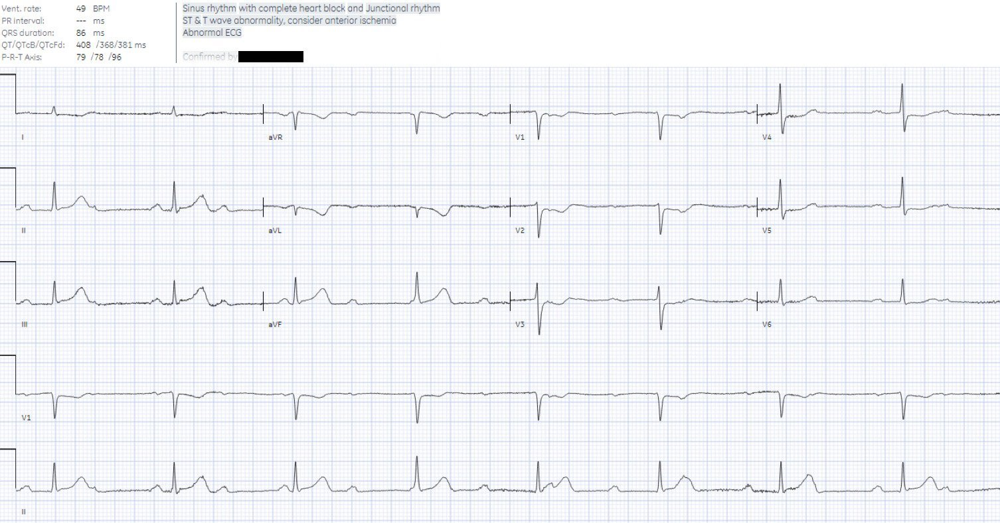
Chỉ có ST chênh lên tối thiểu ở III, không
đạt tiêu chuẩn STEMI là 1mm ở hai chuyển đạo liền kề. Nhưng tiêu chuẩn STEMI chỉ có độ nhạy
43% đối với OMI.[1] Tuy vậy, có nhiều bất thường khác khiến
điện tâm đồ này có giá trị chẩn đoán nhồi máu cơ tim do tắc, nhiều khả năng khu trú ở động mạch vành
phải:
1. Blốc nhĩ thất (blốc AV), có thể là biến chứng thoáng qua của tắc RCA
vì RCA tưới máu cho nút AV [2]
2.Sóng T tối cấp (hyperacute T waves) ở thành dưới,
vốn đã được đưa vào đồng thuận ACC 2022 về đau ngực như một “tương đương
STEMI”[3]
3.ST chênh xuống soi gương (reciprocal)
và sóng T đảo ngược ở aVL, có độ nhạy 99% đối với OMI thành dưới.[4]
4.ST chênh xuống do thiếu máu cục bộ
ở V2-4, có độ đặc hiệu 97% đối với OMI thành sau[5]
Vậy bệnh nhân đau ngực này có điện tâm đồ
chẩn đoán OMI thành dưới và thành sau biến chứng
blốc AV độ 3, nhiều khả năng do tắc RCA. (Xem phần bàn luận của Ken Grauer bên dưới để biết thêm về các blốc AV trong ca hôm nay).
Những dấu hiệu này có giá trị chẩn đoán ngay cả khi không so sánh với điện tâm đồ cũ.
Nhưng chúng còn nổi bật hơn nữa khi bạn so sánh với điện tâm đồ cũ:

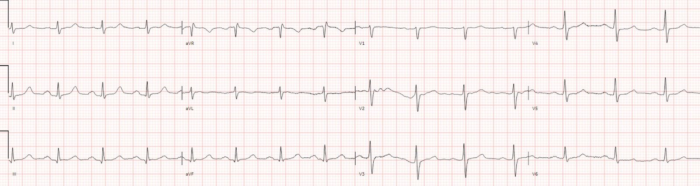
Đây là so sánh đặt cạnh nhau các chuyển đạo thành dưới của điện tâm đồ
nền (bên trái) và điện tâm đồ mới (bên phải), cho thấy sóng T tối cấp kèm thay đổi
soi gương ở aVL:

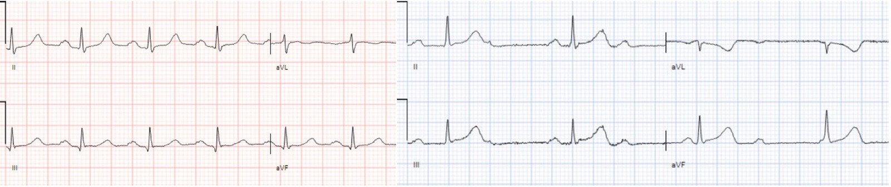
Sóng T tối cấp không cao xét theo giá trị tuyệt đối (chỉ 4mm)
nhưng cao so với QRS, đáy rộng, đầy đặn và trông như bị thổi phồng. Sóng T đảo ngược ở aVL không nhất thiết là bất thường vì nó đồng hướng với QRS âm, nhưng nó rất lớn
so với QRS, soi gương với sóng T tối cấp ở III
Điện tâm đồ này cũng cho thấy thay đổi soi gương có thể là dấu hiệu
rõ ràng hơn của OMI. Đây là các chuyển đạo aVL và V2 của điện tâm đồ mới, được lật ngược
lại:

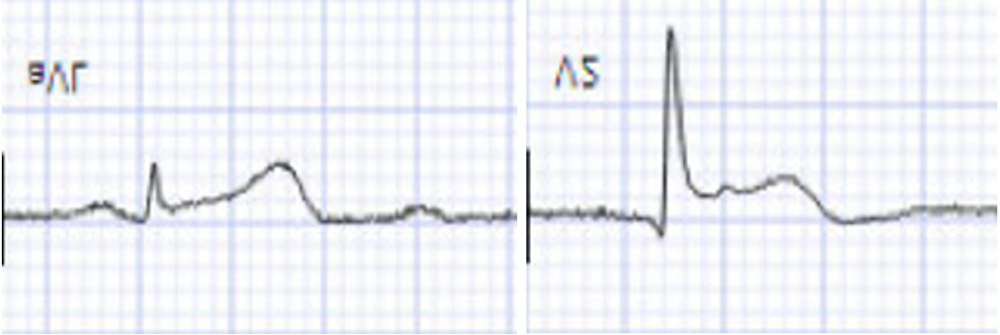
Khi lật ngược các chuyển đạo, aVL có sóng T tối cấp rõ ràng, lớn hơn cả
toàn bộ phức bộ QRS, còn V2 có ST chênh lên.
Nếu chỉ cần lật ngược các chuyển đạo là có thể thấy dấu hiệu tắc,
thì một mô hình chia đôi độ lệch đoạn ST thành
chênh lên và chênh xuống như nhìn thấy trên giấy điện tâm đồ là có vấn đề, vì chúng có thể phản ánh cùng một dòng tổn thương
ở bệnh nhân từ một góc nhìn khác.[6] Khi có dòng tổn thương hướng về một
vùng, nó tạo ra thay đổi soi gương ở phía đối diện, đôi khi còn
rõ ràng hơn vùng tổn thương (với OMI thành dưới) và đôi khi là dấu hiệu
duy nhất trên điện tâm đồ 12 chuyển đạo (với OMI thành sau). AVL và V2-V3 được định hướng để
phản ánh thay đổi soi gương của OMI thành dưới và thành sau tương ứng – nhưng thông tin
hữu ích này bị tiêu chuẩn STEMI bỏ qua vì các chuyển đạo này
biểu hiện ST chênh xuống thay vì ST chênh lên. Vì thế điện tâm đồ đầu tiên bị gán nhãn ‘thiếu máu cục bộ thành trước’ dựa trên ST chênh xuống, thay vì nhận ra đây là thay đổi soi gương của OMI thành sau.
Với một điện tâm đồ “STEMI âm tính” và
đau ngực kéo dài, điện tâm đồ được ghi lại sau 10 phút:

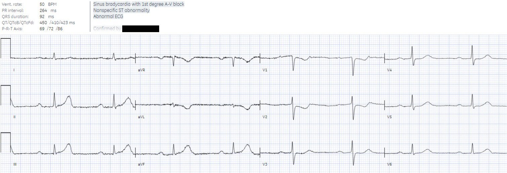
Lúc này blốc AV đã cải thiện từ độ 3 xuống độ 1. Nhưng
vẫn còn sóng T tối cấp ở thành dưới, sóng T đảo ngược (TWI) soi gương ở
aVL, và ST chênh xuống (STD) do thiếu máu cục bộ ở V2-3. Kết quả đọc cuối cùng giờ là “bất thường ST
không đặc hiệu” dựa trên tiêu chuẩn STEMI, nhưng nó vẫn rất đặc hiệu cho OMI dưới-sau. Thay đổi
soi gương cũng nhiều hơn – đây là aVL được lật ngược, với một
sóng T giờ vượt hẳn lên trên phức bộ QRS nhỏ xíu:

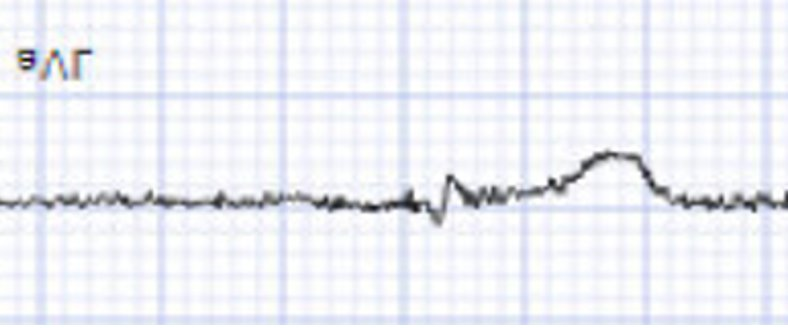
Nhưng giờ bệnh nhân đã có các điện tâm đồ liên tiếp đều “STEMI
âm tính”. Vì vậy xét nghiệm troponin được gửi đi: 90 phút sau có kết quả
250ng/L (bình thường <26 ở nam và <16 ở nữ). Sau đó điện tâm đồ lại được ghi lại:

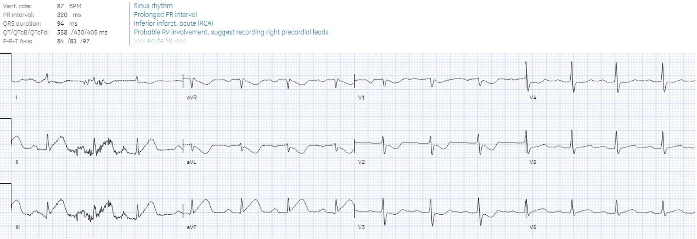
Lúc này điện tâm đồ vừa đủ đạt tiêu chuẩn STEMI, cùng với sóng T tối cấp
rõ ràng hơn.
Điện tâm đồ 15 chuyển đạo được ghi 7 phút sau đó:

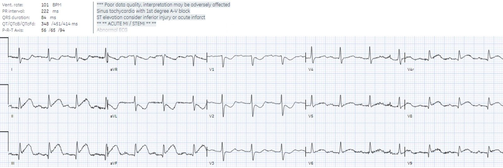
Lúc này ST chênh lên ở thành dưới nhiều hơn, và có đoạn ST dạng lồi
ở V5-6. Các chuyển đạo phía sau V8-9 cũng chênh lên, nhưng điều này chỉ xác nhận
OMI thành sau vốn đã thấy trên điện tâm đồ đầu tiên.
Đây là hình ảnh của điện tâm đồ cuối cùng cho thấy V2-3 được lật ngược (bên trái) so với V8-9 (bên phải):

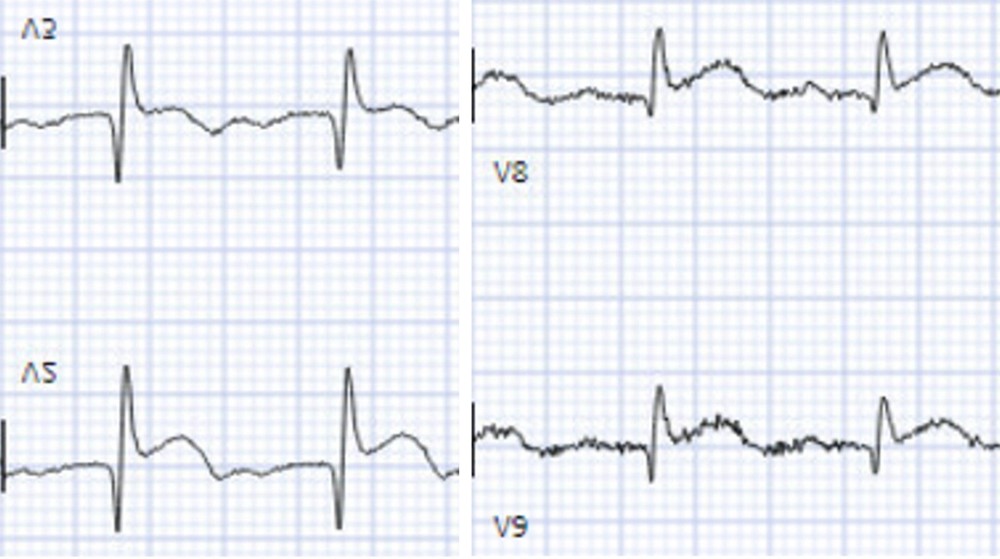
V2-3 được lật ngược cho thấy rõ ST chênh lên và sóng T tối cấp, trong khi V8-9 có điện thế thấp hơn và thay đổi ST/T kém rõ ràng hơn tương ứng, không mang lại giá trị bổ sung nào.
Vì điện tâm đồ giờ đã đạt tiêu chuẩn STEMI, báo động STEMI (Code STEMI) được
kích hoạt. Có tắc 99% RCA đoạn giữa, và troponin đỉnh lớn hơn 25.000ng/L (giới hạn trên của xét nghiệm).
Điện tâm đồ lúc ra viện cho thấy các thay đổi đã hết, và có sóng T tái tưới máu đảo ngược kín đáo
ở thành dưới:

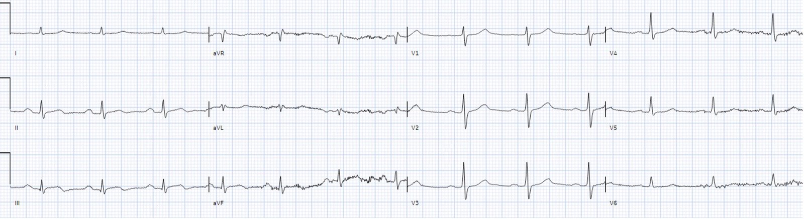
Bệnh nhân này đã được chăm sóc theo chuẩn của
mô hình STEMI hiện hành: các điện tâm đồ liên tiếp cho đau ngực kéo dài, và chờ kết quả troponin với các điện tâm đồ “STEMI âm tính”. Nhưng điều này dẫn đến chậm trễ tái tưới máu 90 phút cho một ca tắc mạch lẽ ra đã có thể nhận ra trên điện tâm đồ đầu tiên. Đây là điển hình của mô hình hiện hành, vì các dấu hiệu OMI có thể nhận ra tắc mạch sớm hơn trung vị 1,3 giờ.[7]
Can thiệp sớm hơn đã có thể cứu được cơ tim, có thể là một lượng cơ tim rất lớn, và hoàn toàn có thể thực hiện dễ dàng nếu tư duy và cách tiếp cận là OMI-NOMI thay vì STEMI/NSTEMI và nếu ứng dụng Queen of Hearts được sử dụng.
Hiện nay đã có AI được huấn luyện để nhận diện OMI.[8] Nếu công cụ này có sẵn trong ca này, chẩn đoán đã có thể
được đưa ra trên điện tâm đồ đầu tiên, và tiết kiệm được 90 phút chậm trễ tái tưới máu.
Đây là kết quả đọc của Queen of Hearts trên điện tâm đồ đầu tiên, kèm
phần giải thích (explainability):

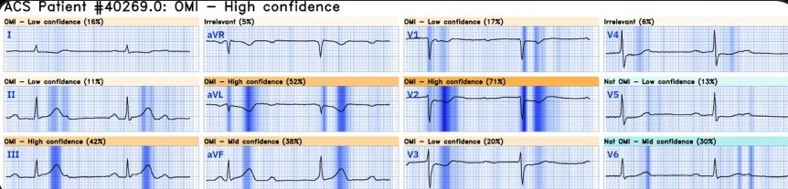
Ngay cả khi không so sánh với điện tâm đồ trước, và không dựa vào ST chênh lên tối thiểu ở III, Queen vẫn nhận diện
OMI với độ tin cậy cao dựa trên sóng T tối cấp ở thành dưới, sóng T đảo ngược soi gương
ở aVL, và ST chênh xuống ở thành trước. Bà không bị ảnh hưởng bởi hướng
của chuyển đạo, và nhận diện OMI dễ dàng như nhau qua sóng T tối cấp
soi gương hay qua ST chênh xuống soi gương.
Bấm vào đây để đăng ký quyền truy cập Queen of Hearts
Điều cần nhớ
1.Tiêu chuẩn STEMI bỏ sót
phần lớn OMI, và dẫn đến chậm trễ tái tưới máu đối với OMI STEMI âm tính (STEMI(-)OMI)
2.Dấu hiệu tắc RCA có thể
bao gồm blốc AV, ST chênh lên kín đáo ở thành dưới, sóng T tối cấp, STD/TWI soi gương
ở aVL, và STD ở thành trước do OMI thành sau đi kèm
3.Thay đổi soi gương có thể
rõ ràng hơn tổn thương nguyên phát, và các chuyển đạo phía sau hiếm khi mang lại
giá trị bổ sung nào so với hình ảnh STD do thiếu máu cục bộ tối đa ở V1-4 (STDmaxV1-4) vốn có thể thấy trên điện tâm đồ 12 chuyển đạo
4.Các dấu hiệu OMI trên điện tâm đồ có thể giúp
chẩn đoán nhanh, và có thể được phổ biến rộng rãi thông qua AI
Tài liệu tham khảo
1. De Alencar Neto. Systematic
review and meta-analysis of diagnostic test accuracy of ST-segment elevation
for acute coronary occlusion. Tạp chí Int J Cardiol, 2024
2. Nikus và cs. Conduction disorders
in the setting of acute STEMI. Tạp chí Curr Cardiol Red, 2021
3. Kontos và cs. 2022 ACC
expert consensus decision pathway on the evaluation and disposition of acute
chest pain in the emergency department: a report of the American College of
Cardiology solution set oversight committee. Tạp chí J Am Coll Cardiol, 2022
4. Bischof và cs. ST
depression in lead AVL differentiates inferior ST-elevation myocardial
infarction from pericarditis. Tạp chí Am J Emerg Med, 2016
5. Meyers và cs. Ischemic
ST-segment depression maximal in V1-4 (versus V5-6) of any amplitude is
specific for occlusion myocardial infarction (versus nonocclusive ischemia). Tạp chí J
Am Heart Assoc, 2021
6. Phibbs và Nelson.
Differential classification of acute myocardial infarction into ST- and non-ST
segment elevation is not valid or rational. Tạp chí Ann Noninvasive Electrocardiol, 2010
7. Meyers và cs. Accuracy of
OMI ECG findings versus STEMI criteria for diagnosis of acute coronary
occlusion myocardial infarction. Tạp chí IJC Heart and Vasc, 2021
8. Herman và cs. International
evaluation of an artificial intelligence-powered electrocardiogram model
detecting acute coronary occlusion myocardial infarction. Tạp chí Eur Herat J Digital
Health, 2024

===================================
BÌNH LUẬN CỦA TÔI, bởi KEN GRAUER, MD (27/5/2024):
===================================
Một phần trình bày xuất sắc của BS. McLaren về một ca rõ ràng đã có thể (lẽ ra phải) được chẩn đoán là OMI dưới-sau cấp dựa trên điện tâm đồ ban đầu.
- Việc điện tâm đồ này ban đầu được chẩn đoán là cho thấy “bất thường sóng ST-T — cân nhắc thiếu máu cục bộ thành trước” — có nghĩa là người đọc đã không nhận ra blốc AV. Lý do điều này xảy ra đơn giản là vì không dành 2-3 giây cần thiết để một ‘con mắt được đào tạo’ thường quy lướt qua dải nhịp chuyển đạo II dài, xem có sóng P dương đi trước mỗi phức bộ QRS với khoảng PR cố định hay không. Hãy thử xem. Chẳng phải chỉ trong không quá 2-3 giây là dễ dàng thấy rằng các sóng P đều đặn không đi trước mỗi QRS với khoảng PR cố định trên điện tâm đồ ban đầu của ca hôm nay sao?
- ĐIỂM THEN CHỐT (PEARL): Nếu bạn không muốn bỏ sót blốc AV độ 2 và độ 3 — Hãy tập thói quen ngay khi được đưa bất kỳ điện tâm đồ nào, luôn dành 2-3 giây đầu tiên (chỉ cần chừng ấy thời gian) để chắc chắn rằng có sóng P và chúng có (hay không) liên quan với các phức bộ QRS lân cận.
- Như BS. McLaren đã nêu — nhịp trên điện tâm đồ ban đầu của ca hôm nay là blốc AV độ 3 ( = hoàn toàn) — ở đây tại mức nút AV, xét theo phức bộ QRS hẹp của các nhát thất với tần số thoát ~50/phút (nằm gọn trong khoảng thường gặp 40-60/phút của nhịp thoát nút AV).
- ĐIỂM THEN CHỐT (PEARL): Theo kinh nghiệm của tôi — manh mối TỐT NHẤT để phân biệt blốc AV độ 2 với độ 3 — là trong phần lớn trường hợp blốc độ 3, đáp ứng thất sẽ đều. Đó là vì phần lớn các nhịp thoát đều đặn (hoặc ít nhất là khá đều). NẾU thay vì đều — bạn thấy một nhát thất rõ ràng xuất hiện sớm hơn dự kiến — thì nhiều khả năng mức độ blốc AV không phải là hoàn toàn.
- Điện tâm đồ ban đầu trong ca hôm nay là blốc AV hoàn toàn vì: i) Nhịp nhĩ khá đều; ii) Nhịp thất khá đều; và, iii) Các sóng P không liên quan với các phức bộ QRS lân cận (tức là sóng P “đi xuyên qua các phức bộ QRS” — điều dễ dàng xác lập khi nhận thấy khoảng PR thay đổi liên tục) — và, iv) Không có sóng P nào được dẫn truyền dù có đủ cơ hội để dẫn (tức là, dù trên điện tâm đồ ban đầu của ca hôm nay, chúng ta không kỳ vọng những sóng P có khoảng PR ngắn sẽ dẫn truyền — thì vẫn có thừa cơ hội cho những sóng P xuất hiện ở giữa khoảng R-R dẫn truyền trên bản ghi này, nhưng chúng vẫn không dẫn được).
- Như BS. McLaren đã nêu — blốc AV thường gặp ở bệnh nhân OMI cấp thành dưới, thành sau và/hoặc dưới-sau. Động mạch “thủ phạm” hầu như luôn là RCA hoặc LCx, vì nhánh nào cũng có thể cấp máu cho nút AV (“thủ phạm” trong ca hôm nay là RCA). ĐIỂM THEN CHỐT (PEARL): Ngay cả khi người đọc không nhận ra các đặc điểm chẩn đoán OMI dưới-sau cấp trên điện tâm đồ ban đầu của ca hôm nay — Việc không dành 2-3 giây đó để khảo sát dải nhịp chuyển đạo II dài lẽ ra đã phải giúp nhận ra rằng ST-T chênh xuống ở các chuyển đạo trước tim khó có thể là hậu quả của “thiếu máu cục bộ thành trước” — mà nhiều khả năng hơn nhiều là phản ánh OMI dưới-sau cấp — vì blốc AV độ 2 và/hoặc độ 3 với QRS hẹp thường gặp trong OMI dưới-sau — nhưng hiếm gặp trong thiếu máu cục bộ/OMI thành trước.
- ĐIỂM THEN CHỐT (PEARL): Khi blốc AV với QRS hẹp xảy ra kèm OMI cấp thành dưới và/hoặc thành sau — thường có sự tiến triển và/hoặc thoái lui theo từng bậc (tức là từ độ 1 — sang độ 2, Mobitz loại I — rồi sang blốc AV độ 3 ở mức nút AV — hoặc — từ độ 3 — sang độ 2 Mobitz I — rồi về độ 1, NẾU bệnh nhân khởi đầu bằng blốc AV hoàn toàn). Như BS. McLaren đã nêu, “tin tốt” — là phần lớn trường hợp, blốc AV đi kèm sẽ tự hết, đặc biệt nếu động mạch “thủ phạm” được tái tưới máu kịp thời.
Đóng vai “người phản biện” (Devil’s Advocate): Xét theo điểm then chốt (Pearl) vừa nêu — tôi ngờ rằng điện tâm đồ thứ 2 trong ca hôm nay (ghi chỉ 10 phút sau điện tâm đồ thứ 1) biểu hiện blốc AV độ 2 kiểu 2:1 loại Mobitz I — chứ không chỉ là nhịp xoang kèm blốc AV độ 1.
- Chúng ta thường thấy cả blốc AV độ 1 (tức là ở các nhát được dẫn truyền) — lẫn blốc AV độ 2 Mobitz I cùng lúc!
- Tần số nhĩ trên điện tâm đồ thứ 1 hôm nay chỉ dưới 100 lần/phút — và tần số thoát bộ nối ~50 lần/phút.
- Tần số thất vẫn giữ nguyên ~50 lần/phút trên điện tâm đồ thứ 2 — nhưng để đây là nhịp xoang kèm blốc độ 1, thì tần số nhĩ phải giảm từ chỉ dưới 100 lần/phút xuống 50 lần/phút trong vòng 10 phút.
- Sự giãn rộng “thêm” rất tinh tế ở đỉnh sóng T tại các chuyển đạo dưới, và ở sóng T đảo ngược tại chuyển đạo aVL, xảy ra đúng vào thời điểm thích hợp trong chu kỳ R-R để có thể “che giấu” một sóng P thứ 2 (nhất là nếu có loạn nhịp xoang theo pha thất (ventriculophasic) — như rất hay gặp trong blốc AV độ 2). Và, nếu có một sóng P thứ 2 đang “ẩn” trong mỗi sóng T — thì tần số nhĩ vẫn chỉ dưới 100 lần/phút — thay vì phải giả định rằng tần số nhĩ đã giảm nhanh đến vậy xuống ~50 lần/phút.
- Tần số nhĩ trên điện tâm đồ thứ 3 rõ ràng nhanh hơn nhiều so với 50 lần/phút.
- Và, lý do tôi cân nhắc kỹ khả năng blốc AV 2:1 trên điện tâm đồ thứ 2 hôm nay — là vì theo điểm then chốt (Pearl) ở trên, blốc AV độ 3 ở mức nút AV thường hồi phục theo kiểu thoái lui từng bậc (tức là chuyển từ độ 3 — sang độ 2, Mobitz I — rồi sang độ 1, trước khi cuối cùng trở lại dẫn truyền xoang bình thường).
- XIN NHẤN MẠNH: Tôi không thể chứng minh được liệu nghi ngờ của tôi rằng điện tâm đồ thứ 2 trong ca hôm nay biểu hiện Mobitz I 2:1 thay vì nhịp xoang kèm blốc độ 1 là đúng hay sai. Để chứng minh điều này — tôi cần xem theo dõi điện tâm đồ liên tục cho thấy diễn biến của tần số nhĩ và tần số thất khi ca bệnh tiến triển.
- Dù vậy — Về mặt lâm sàng, việc điện tâm đồ thứ 2 cho thấy nhịp xoang ~50 lần/phút kèm blốc độ 1 hay Mobitz I độ 2 kèm blốc AV 2:1 và blốc độ 1 không quan trọng — vì tần số thất là như nhau trong cả hai trường hợp và nhiều khả năng blốc AV sẽ hồi phục khi được điều trị.
- ĐIỂM THEN CHỐT (PEARL): Dù đã nói như trên — vẫn có những lúc việc bệnh nhân OMI dưới-sau cấp của bạn đang ở nhịp xoang hay blốc độ 2, Mobitz I kèm blốc AV 2:1 (trong đó sóng P thứ 2 ẩn trong sóng T) sẽ có ý nghĩa lâm sàng. Biết khi nào và tìm blốc 2:1 như thế nào trong các ca tinh tế (như tôi mô tả ở trên đối với điện tâm đồ thứ 2 hôm nay) có thể giúp nhận ra nó dễ dàng hơn rất nhiều.
==================================
PHẦN BỔ SUNG (28/5/2024):
Tôi viết bình luận ở trên vào hôm qua — khi đang đi công tác, không có máy tính màn hình lớn và không có compa đo (calipers).
- XIN NHẤN MẠNH: Compa đo không cần thiết để điều trị tối ưu cho bệnh nhân trong ca hôm nay — như BS. McLaren đã chứng minh xuất sắc trong phần bàn luận của mình. Nhưng tôi thấy hữu ích khi, sau khi tình huống cấp cứu đã qua, ngẫm lại các diễn biến để tự trau dồi — để tôi có thể học hỏi và làm tốt hơn nữa trong tương lai.
- Dù đã nói như trên — Sau khi về nhà và có thể xem 2 điện tâm đồ này rõ hơn — tôi thực sự chỉ mất không quá vài giây dùng compa đo để xác nhận điều mà khi không có compa tôi phải mất lâu hơn nhiều.
Tôi đã đánh dấu 2 điện tâm đồ đầu tiên trong ca hôm nay ở Hình 1.
- Các mũi tên ĐỎ làm rõ loạn nhịp xoang theo pha thất (ventriculophasic) trên điện tâm đồ #1. Cần lưu ý — phần lớn các trường hợp khi gặp loạn nhịp xoang theo pha thất trong các nhịp có blốc AV — thì khoảng P-P “kẹp” sóng P [người dịch: nguyên văn ghi “P wave”, nhiều khả năng ý là phức bộ QRS] là khoảng ngắn hơn (được cho là do tưới máu tăng thoáng qua nhờ QRS) — nhưng chúng ta lại thấy điều ngược lại ở Hình 1.
- Blốc AV hoàn toàn (như BS. McLaren đã nêu) hiện diện rõ ràng trên điện tâm đồ #1 (nhịp thoát bộ nối khá đều — nhưng hoàn toàn không có liên hệ giữa loạn nhịp xoang và các phức bộ QRS lân cận mặc dù có đủ cơ hội để dẫn truyền).
- Không thể chứng minh điều gì trên điện tâm đồ #2, vì không có dải nhịp chuyển đạo dài — nhưng các mũi tên HỒNG gợi ý những biến dạng cực kỳ tinh tế mà tôi nghi là các sóng P “ẩn”, do blốc độ 3 thoái lui — thành blốc AV độ 2, Mobitz loại I với dẫn truyền AV 2:1 trên điện tâm đồ ghi lại này, được ghi 10 phút sau điện tâm đồ #1.

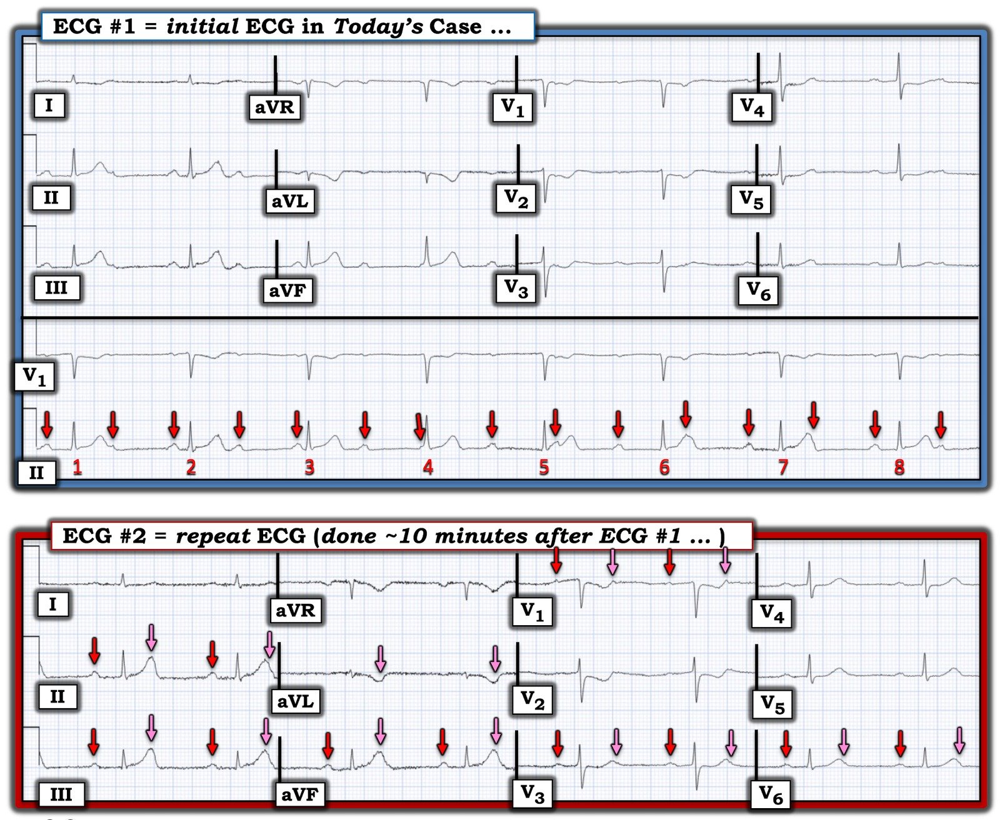